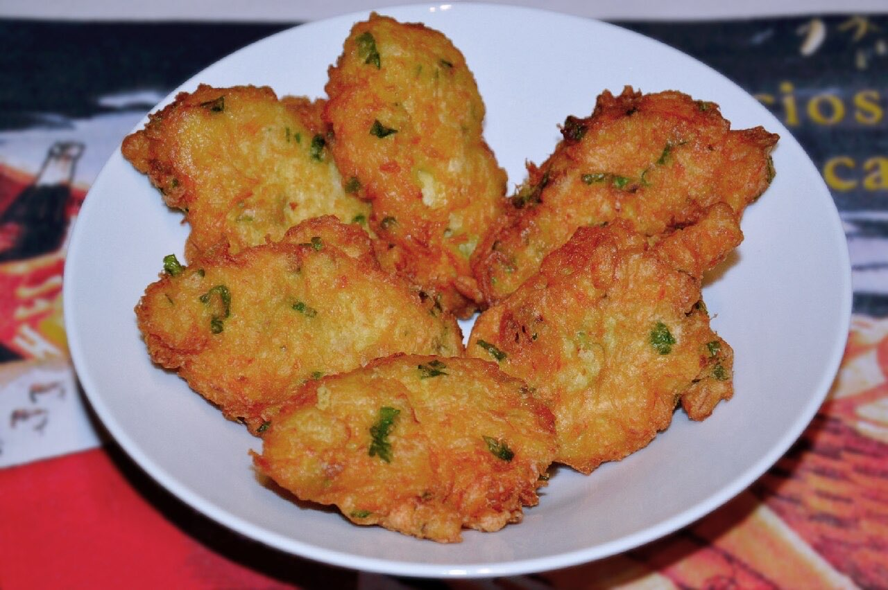

Fotografias ilustrativas — no site final usamos as vossas.
Cozinha tradicional portuguesa · Lordelo
Petiscos de sempre no Largo dos Poetas
Cozinha tradicional, para comer à mesa sem pressa.
4,5★ em 177 avaliações no Google.
Em Lordelo. Reserve por WhatsApp ou telefone.
A Petisqueira é um restaurante de cozinha tradicional portuguesa em Lordelo, no Largo dos Poetas. Venha almoçar ou jantar sem pressa, com amigos ou em família.

Fotografias ilustrativas — no site final usamos as vossas.
Pedido de reserva
Escolha o dia e a hora — o pedido chega por WhatsApp e confirmamos logo.
↑ Assim chegaria a mensagem ao vosso WhatsApp. (Nesta demonstração nada é enviado.)
Onde estamos
Proposta para A Petisqueira
Esta página foi feita de propósito para A Petisqueira por João Machado, programador web aqui de Guimarães. Inclui:
Eu trato do alojamento e da manutenção. Sem compromisso.